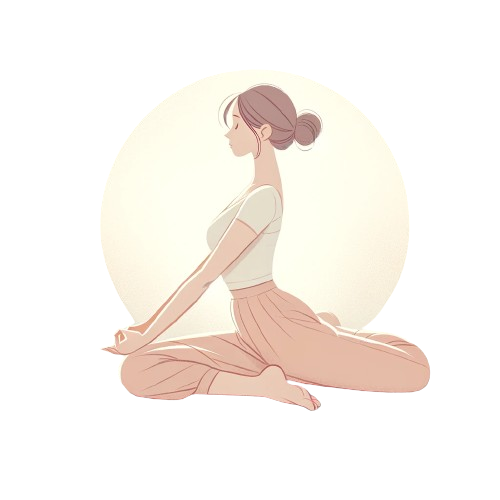
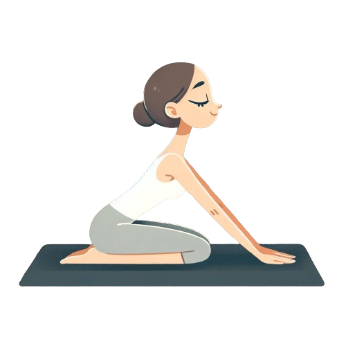

Helpful Stretches and Exercises
These simple, low-impact techniques should help you relax:
Pelvic Tilts: Start on your hands and knees. Inhale and arch your back, exhale and round your back. Repeat slowly for a minute.
Seated Butterfly Stretch: Sit with your back straight and bring the soles of your feet together. Hold your feet and gently press your knees towards the floor.
Side-Lying Leg Lifts: Lie on your side and lift the top leg slowly, then lower it back down. Repeat on both sides.
Here's a basic, easy-to-do workout for expectant mothers:
- 2 sets of 10 Wall Angels: Begin by standing with your back against a wall. Raise your arms so that your elbows are bent at a 90-degree angle. Keeping your arms in this position, slowly slide your arms up the wall as high as you comfortably can while maintaining contact with the wall. Now, lower your arms back down to the starting position while still maintaining contact with the wall.
- 2 sets of 10 Pelvic Tilts: Lie on your back with knees bent and feet flat on the floor. Inhale, then exhale and engage your core muscles to gently tilt your pelvis upward. Hold it for a few moments, then release and gently lower yourself down.
- 2 sets of 10 Standing Leg Lifts: Sit on a stable chair with your back straight and lift one leg straight out in front of you. Hold for a few beats, lower it, and switch sides.
Prenatal Yoga Poses:
Cat-Cow: Start on your hands and knees. Inhale, arch your back, and lift your head (Cow). Exhale, round your back, and tuck your chin to your chest (Cat).
Warrior II: Stand with feet wide apart. Turn one foot out, bend the knee, and extend the arms parallel to the floor.

Child's Pose: Kneel on the floor, sit back on your heels, and stretch your arms forward.
